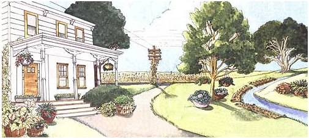
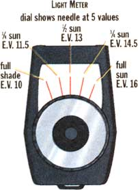
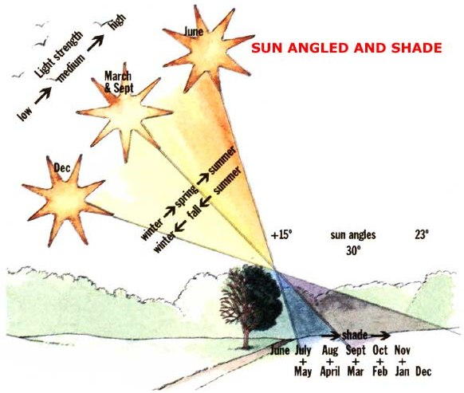
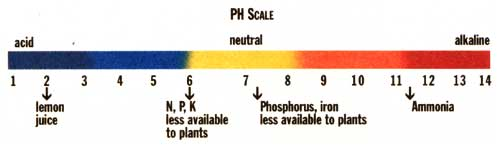
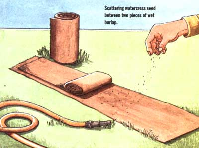

GARDEN & YARD
Identify and precision-plant the microclimates of your land.
Illustrations: Bella Hollingworth
I was driving through some of upper Michigan's bleak sand-dune and peat-bog country a few years back, and marveled that even scrub pine and horsetails could grow in such sour and leached-out soil. On a rounding curve, I was astounded to see a 25- or 30-foot-high festoon of lush green and heavenly blue reaching for the sky. The angled guywire of a telephone pole at the entrance to a long farm drive hosted the most luxuriant growth of Heavenly Blue Morning Glories (Ipomea C. ) I'd ever seen.
I pulled over to examine the base of the flowering vines. A roadside ditch flowing with dear, tan peat-stained bog water maintained high local humidity and watered a waist-high growth of weeds that crowded all around the pole-except where the morning glories were growing. Three different-aged plantings of a half dozen vines apiece emerged from a foot-deep mulch that had been laid over a trio of well-used wood-slat, bushel-sized produce baskets half-buried in the sandy peat soil. The basket rim was solid enough to keep sod and creeping ground vines from crowding out the Ipomea roots, and each formed a good 6-inch-high, disc-shaped raised bed.
Time was too short to arrange a polite visit to see if the farmer's method was as innovative as the roadside flower-growing. But, once home I read up on Ipomea, and learned that it is a woody-stemmed perennial vine that will grow forever as it climbs lianas and thin tree branches in its hot, wet tropical homeland. It is also extremely frost tender, so it is cultivated as a half-hardy annual in temperate climates. It wants moderate but even moisture and a soil rich in potassium, phosphorus and trace elements, but low in nitrogen in the early vegetative growth stage lest the vine grow too lush at the expense of flowers. Periodic, later doses of nitrogen are desirable.
I theorized that the Michigan farm folks had gone a long way toward figuring out the plant's ideal (native) growing conditions. Most important, I guessed, was an unusually high support so the vine was free to rise more than 30 feet around the kind of small diameter vertical support its tight-spiraling stems prefer.
These folks also discovered that the vines do best in open, moving air (to avoid leaf mildew), amid a naturally selected growth of wild native plants-a natural mix of what we call weeds that makes it harder for insect pests to locate their prey species among the conflicting sights, sounds and smells.
Over the years I've tried to grow supertall morning glories, and slowly learned the hard way-the wisdom of the Michigan morning glory method. It embodies a new (to me) gardening system. Till someone comes up with a better name, I'll call it "niche gardening"-creating a series of small garden plots all around your place in spots that offer the varying combinations of sun/shade, natural or created soil type, moisture, air flow, soil warmth, and surrounding vegetation that best duplicates each plant's native "ecological niche" (see Webster's definition of "niche;" left).
Niche-gardening applies as well-or better-to food-producing varieties as it does to flowers, and I'd like to think of it as the next step toward achieving a 21st century, nature-knows-best-style home garden. After all, most of us have already taken the first step and embraced the organic method of raising food plants by composting kitchen, lawn, and garden residues to enhance and nourish our soil, and by opting for benign soil enhancers and natural pest controls over harsh, manufactured chemicals.
But the planning, location, and layout of most vegetable gardens still reflects the 16th century notion that mankind has the right and duty to employ science and reason to impose order on the "chaos" of nature. We've kidnapped plant species from different natural environments all around the globe, ranging from potatoes that evolved in the thin, rocky mineral soils of the cool, dry Peruvian Andes, to eggplant from the steamy living-sponge soils of southeast Asian jungles-lined up in unnatural straight rows, inside a rectangular plot of bare ground, surrounded by alien plant species, and located in foreign soil everywhere from Vancouver to Key West.
How much better production, better nutrition, and plant health can we expect by creating specialized nichesmicro climates-perfectly suited to each plant species?
Use your imagination. I've niche-planted anything from a single tomato in an old wooden bucket, and hung it off the porch, to a 3-foot row of dense-planted sugar peas on a trellis in the half-shade of a big maple; to two parallel, 6-foot rows of pickling cucumbers on stakes and netting at the back of a rose garden; to a 10 x 20-foot plot of perennial Jerusalem Artichoke bordering the piney woods. I've located others in the middle of a lawn and the edge of a weed patch; in half-round or square-sided terraces made from stones, logs, or landscaping timbers dug into rocky inclines; in pots in full sun or full shade; in baskets hanging from the barn eaves; in wood cribs suspended in the half-shade of the apple tree; on twine strung up at the sun end of the grape arbor; or from rope strung between trees.
Containers fit well in a niche garden. Half-whiskey barrels, redwood planters, horse troughs, split propane tanks and flower boxes can be bottom-drilled and lined with crushed rock for good drainage, then planted to strawberries and vegetables. Nantes-type carrots interplanted with green bunching onions do especially well for me in 18-inch-deep boxes or raised-bed niches. Oh, that tomato I tried in an old wooden well bucket-it produced two fruit sets through July, but developed so much root mass that it broke the bucket. I set it into twice the soil; it began flowering and set new fruit well into September. Moral: A standard tomato plant needs more than a gallon of soil to produce its maximum.
Just enough enriched growing medium to support each plant is mixed to one's best estimate of the variety's precise specifications, then placed into quart- to bushel sized planting holes, or placed in raised beds, pots, tubs, or terraces. Time-consuming perhaps, but you can do the work in the off season or bad weather, and save the time wasted in working the 50 percent or more of garden space that's typically used for garden paths or inter-row spacing.
The "Soil Mixes" list (page 50) of plant preferences (my findings for my soil and the New England climate; you'll work up different ones) suggest that not all varieties need full sun. Indeed, a good eight hours has proven ample for anything I've ever grown. Some such as pole beans can get by with four hours of full sun or eight hours of filtered sun (as under anti-bug netting or a lacy-leaved locust tree). Summer lettuce and spinach actually benefit from growing in the coolness of a moist spot in semi-shade, so you can set niches in shade of trees or the house.
If too-wet ground is a problem, you can underlay small niches with a layer of crushed rock, dig mini-dry wells, or even set in a few drain tiles (something that takes a major excavation in a large garden). In dry weather, arranging trickle-irrigation or hand-watering the absorbent soil mixed up for niches is easy-and you aren't wasting water on all that bare inter-row and pathway ground. Or, you can fill gallon milk jugs with water, punch small holes in the lids and pinholes in the bottoms, and invert the jugs in the soil for automatic drip-irrigation.
You can test soil moisture by squeezing it into clumps, and evaluate sand content by rolling it between your thumb and forefinger and looking at it hard. To check organic matter, dissolve a 6-inch-long cylindrical core (or a cross-section slice off the side of an 8-inch-deep hole) of topsoil in a glass jar filled with warm water; stir well and compare thicknesses of the several layers that settle: pebbles, then sand, then clay and loam, then pure loam in density layers. The darker and thicker the top layers are, the more loam you have. Half loam is great; 10 percent needs more compost.
But evaluating acidity and nutrient content with accuracy takes some skill and equipment. It's a good idea to have your local Cooperative Extension Service or a commercial lab test your soil before fine-tuning separate niches. Costs are nominal, and it will give you a base point to work from. Then, to develop niches with meaningful differences, you need to evaluate light strength and soil temperature, assure that the Ph is correct within fairly precise limits, and accurately access nutrient levels.
For this, you really need a set of test instruments. They needn't be elaborate or costly (after all, you aren't a USDA Aggy Research Station).
A soil-thermometer that's robust enough to hold up to repeated plungings into soft soil can be found in most seed catalogs for under $10. A really sturdy model built like an oven thermometer costs $25 or more. Temp differences will be most marked in spring and fall as weather changes. You will be surprised at the variances often +/-10 to 20 degrees-in surface temperatures, between soil under mowed lawn and under high growth, for example, at the same time of day, even when both are in full sun.
I try to find time to record the sun/ shade/light strength (with a cheap little reflective photographic light meter) and temperature of niches early in the day, midday, and in the afternoon several times a year. Obviously, full-sun-loving plants want the brightest spots. Warmth-loving tomatoes, peppers, etc., do best in warm soil, and plants such as cabbage prefer cool feet. Or, you can lay black mulch, reduce shade, or set dark-colored, heat-sink rocks around to warm soil; or add a deep organic mulch, plant fast-growing shading annuals, or erect a lath house or net cover to cool the soil.
I have tried those little one-piece instruments that have a probe or two that you stick into the soil to get a readout on a built-in dial-and found them next to worthless. All they do is make a very crude reading of the ability of soil to conduct electricity-which is affected more by water content than Ph, nitrogen content, or whatever the meters purport to read. Easier, faster, cheaper, and more accurate is an inexpensive soil test kit like a a mini chemistry set that uses reagents, test tubes, and litmus paper or color-coded readings. My favorite is the Lustre-Leaf Ph/N/P/K kit that gives you 40 tests (enough for 10 niches). (Only $14.95, from Johnny's Selected Seeds, Albion ME 207-437-4301.)
Carry a gallon of uncontaminated distilled water (not tap water or even jugged well water) to clean out the test vials, and you can do niche garden tests for Ph and nutrient levels in an hour or two. Values respond slowly to modification unless you use severe chemicals, so an annual test is sufficient once you get your niches established.
To increase Ph one half point (say, from 6.0 to 6.5), till in a good pound (a double handful) of ground limestone per 20 square feet (a niche with sides of 4 and 5 feet). The same amount of wood ash does the same and works faster, but doesn't last as long. To decrease Ph make soil more acid-till a bushel or more of peat moss, leaf, or pine needle mold into that 20-square-foot niche, and don't lime. To add nitrogen, add cottonseed meal, grape mast ,or any other agricultural processing byproduct-or blood meal or fish meal-into planting holes or seeding trenches. For phosphorus, add in as much phosphate rock as you added lime. Or bury a scant handful of bone meal in planting holes (bury it deep so the household hounds won't dig it up and make themselves sick). Potassium is best added to planting holes via green sand, a natural deposit that sometimes needs a special order from the local feed store, but is worth it. Or, water with diluted fluid kelp concentrate, which will also supply trace elements.
Many country places host small streams or ponds. And garden pools, with waterfalls and small streams created by recirculating stored water with small pumps are becoming popular garden ornaments. I've expanded on the country-kid's love of building rock dams in roadside ditches: I redirected a little year-round stream that emerges from a rock outcropping in the hill above the house so it now runs through the niche-plot-sprinkled side yard. Practically any shady freshwater environment-even a natural, low, damp spot in the woods ,or one that's maintained with a dripping hose at the bottom of your garden, can be used as a salad-green niche, for growing watercress, for example.
Watercress is slow to germinate and takes its time growing, so its best to start the seed inside at a cool temperature, between wide strips of coarse, wet fabric. I use burlap that I keep moist till little sprouts appear, then keeping it all constantly moist-harden-off the sprouts for a week on the cold porch, then insert the damp burlap strips in light shade just at the stream edge. Margins of the cloth are buried in the wet mud, with rocks placed strategically to hold the center down. The cress will root and grow at its own sweet pace, and eventually colonize the bank and slower-moving water. You will have to grub out weeds that try to crowd the cress out. Don't over pick; leave a little rosette of leaves on each stem. Don't pull out the roots either-this is a perennial.
Water in my spring emerges from the rocks deep underground at a uniform 40°F year-round and encourages the cress to an early start, so it will provide salad cuttings before any ground-grown green. A feeding with liquid fertilizer in fall when water is lowest and the bank driest will do wonders for next year's production.
Niches can be surrounded by flowers, lawn, shrubbery, or weeds. Indeed, a growing number of natural-culture garden experts believe that a surround of opportunistic weed species is not only good for the soil, but also good for cultivated plants. As in the Michigan morning glory example, a natural growth of native plants serves both to balance nutrients in the soil and to conceal the often tender cultivated varieties from pests. Whereas in a conventional garden, long and orderly rows of are lined up like pins with unnatural, bare strips at each side, signaling that your lovingly-raised cabbage transplants are begging to be mowed down by the first groundhog, aphid, or flea beetle that happens to drop by. A conventional garden, with plants lined up for the convenience of mechanical cultivation, is not a triumph of man over nature's chaos, but an insult to the natural order-which is not chaos at all, but a seemingly random function of sun, wind, water, time, and the hand of the Creator: a many-million-year-old rationality and organization of a higher order.
Niches can be made nearly self-tending by setting transplants and fast-sprouting, large-seeded varieties such as beans through holes in a soil cover of one of those new landscape fabrics. These fabrics permit air and water to penetrate, but block sunlight, to keep weed seed from spouting near enough to your food plants to compete for food and water; it lies flat with only a rim of soil and a rock or two in the middle to hold it down, and does not wind-shred in a single season like old-style black plastic mulch.
You can't direct-sow small-seeded varieties such as lettuce and carrots through sheeting. I like to sterilize the top inch or so of soil in smaller, densely planted small seed niches to kill mold spores, insect and slug eggs, and weed seed (do this by heating it heat it in an oven at 350°F with a potato; it's done when the potato cooks through). Using pelleted carrot seed, and mixing lettuce and other tiny greens seed with sand and broadcasting it, reduces need for thinning.
Weed seed can blow into even a sterilized niche, and some help is needed keeping the weeds' rapid and vigorous growth habit from swamping the vegetables. In small niches, two or three shallow handhoeings will usually do.
In niches too large to sterilize soil, a little Mantis-type power cultivator is indispensable. Even if it means delaying planting a little, I like to till three times-a week apart-in spring before setting out plants. This killsmost weeds as they sprout.
An old-hay mulch applied once soil is warm and summer-dry will keep weeds down during the growing season. But when most large, long-term varieties (winter squash, dry beans, crucifers, tomatoes, peppers) are beyond the vegetative growth stage and are setting or maturing produce, permitting ornamental flowers or weeds to grow up around them creates a living mulch to cool soil and retain moisture (so long as you mow or top the weeds before they make seed-especially that double-drafted crabgrass).
Custom-mixing soil for every plant is not for those of us with time, space, and need or dedication to grow all our own food. When I was feeding a young family, I grew potatoes, corn, peas, beans, winter-keeping root vegetables, and cabbages for quantity and winter-keeping quality rather than eating quality, ease, and ornamental value. But, for most of us these days, time for gardening is scarce, and the trend is smaller gardens, and less but higher quality-produce. Still, despite all our garden planning in the chill of February, too many conventional gardens are overplanted in a burst of spring enthusiasm. Then, keeping weeds down through the summer-harvesting even-often becomes an onerous chore.
Selecting and modifying microclimates will make that winter planning exercise an annual one in experimentation that will become more sophisticated, productive, and rewarding as years go by. You might have less production overall than you get from a big conventional garden. But with well planned succession-planting of the small, enriched-soil plots, you will have a constant supply of fresh produce; none will be wasted, and you'll harvest the most per plant.
Any niche is liable to invasion by sod or nearby weed roots. I keep it out with a barrier made from old (untreated) wood shingles gleaned from a re-roofing job. You can also buy plastic edging in rolls, or interlocking panels. Plastic or overlapping shingles hammered 6 inches into the soil form a solid shield around the planting soil. For raised beds, I double up the shingles and leave 3 or 4 inches sticking above soil level; then fill with custom planting mix.
My favorite niches aren't snugged into the flower garden, terraced out of the hillside, or plugged into the roadside spoil by the telephone poles. They hang from trees, buildings, arbors, and poles. You've surely seen, and probably tried, those wire-mesh "summer baskets" lined with sphagnum moss, filled with growing medium, and sporting lush annual flowers. How about growing vegetables in them?
Commercial basket-plants are often dosed with flowering hormones to look good at the market, so I'd not recommend recycling an entire basket. But you can glean used basket frames in the fall from neighbors or the dump, buy new ones from florists, or make your own from soft wire or coat hangers. Leave used frames out over winter or sterilize in a weak solution of water and laundry bleach. Line with bark, dumps of native mosses, or live sphagnum from the florist-or with burlap, horticultural fabric, or any other sheet material that is permeable so excess water can flow out. Then, fill with sterilized soil mix, and hang in full or partial sun from posts, a laundry pole, under tree limbs or from the porch or windows-indoors or out.
You will have to water baskets if rain is scarce; however, this chore is offset by a virtual lack of pests. Insects and most disease vectors expect to find flowers and veggies growing at soil level. Ground pests such as slugs and ground beetles can't get at hanging baskets. Flying pests in eating or egg-laying mode seldom fly much higher than their prey plants. Consider the little greenish-yellow sulfur butterflies-they lay eggs that produce those smooth, green caterpillars, which can chew members of the cabbage family to coleslaw before its picked. You see them in pairs, rising up in spirals above the garden in their delightful mating ritual. But, normally they flit about just at broccoli top altitude. Even if they smelled the fat cauliflower growing in a basket hanging from the apple tree, they wouldn't be able to locate it,unless they have Superbug X-ray vision that can see up through a basket full of moss and soil. And flying pests like coddling moths and curculios that are attracted to apples don't care for broccoli or collards.
What to grow in baskets? The smaller leaved hybrid broccoli and self-blanching cauliflower does well-and there's no chance for them to get club root. Peppers are good. So are bush-type summer squash and cucumbers.
You can try the hanging-basket culture of (edible) vining nasturtiums, European (burpless) cucumbers, pati-pan or other small-fruited summer squash, and even mini-melons. if you support the fruit in mesh bags. But my favorite basket-grown plant is everyone's favorite vegetable: tomatoes.
Yep. In its semitropical South/CentralAmerican origins, the tomato is a rampant-growing perennial vine with stems that kind of inchworm out from the plant base, setting roots and new plants wherever stems contact soil.
For basket-growing, I've done best with wild small-fruited, "cherry"-type varieties with a rank, wholly indeterminant growth habit. The vine has no "up-growing" tendency, so the main stems, and then the suckers that grow from each node, happily flow over the basket rim, producing great festoons of small fruit. Johnny's Selected Seeds offers the best variety, including red, yellow and gold varieties in round and pear shapes, featuring several newly-released wild and semi-wild types from Mexico that produce hundreds of super-rich-flavored little fruit.
Full-size, indeterminate plants go into full-bushel-size baskets. The new Miniature Tiny Tim is a patio-type that grows no more than a foot high, and can be grown in gallon-size baskets or hanging ceramic pots with drain holes and a layer of crushed rock at the bottom. (From the Canadian seedsmen Vesey's, York P.E.I, COA 1P0, Canada. In the U.S.: POBox 9000, Calais, ME.)
Tomato soil should be low in nitrogen during the early growth stages, and no healthy plant should be fertilized till first fruit set. Thereafter, the weather will be getting hot and summer-dry, and I maintain constant soil moisture (easily checked by hefting the basket from the bottom as it hangs) by watering as needed with manure or compost tea, or a weak solution of soluble 10-5-20 plant food.
If you agree with me that there's no more efficient use of manufactured fertilizers than to be applied in a weak, soluble solution as foliar spray or added to a rich organic soil, you might try the special tomato food Phostrogen: 12.5-5.0-24.5, amended with a full-balanced nutrient package and the extra calcium needed to prevent blossom-end rot. (Also from Vesey's.)
Think of it, with hanging baskets there'll be no cutworms to gnaw off your young, hand-raised tomato transplants at ground level. No tomato hornworms to devour a handful of leaves overnight. No soil-born rots to ruin ripe fruit or wither leaves. No slimy slugs sneaking around under your ground mulch and no marauding mice or voracious voles nibbling almost-ripe fruit. And with the baskets hanging open on all sides to the air, you can control soil moisture at surface and at depth to prevent most rots, wilts, and mold problems.
It's most fun to combine a variety of complimentary or companion plants in a basket or ground niche. I plug insect-repelling miniature marigolds into vacant spaces everywhere. In near-full sun, loose loamy soil, and moderate moisture, plant your own ratatouille: eggplant, sprouting broccoli, tomatoes, garlic, sweet onions, and basil. Off to one side in a niche that will receive late-season sun, combine parsnips, brussels sprouts, and leeks-all long season crops for post-frost harvest.
In half-shade, cool soil and a super-nitrogen-rich soil, plant a random scattering of varicolored salad greens. This year (1997) has been designated "Year of the Mesclun"; that's French for a mix of greens that are snipped off one leaf at a time as soon as they begin making inch-long leave sin as little as 14 days. You'll find the seed catalogs featuring claytonia, mustards, arugula, corn salad, cresses, endive, orach, purslane, raddicio, tetragonia, sorrel, a dozen Oriental leaf veggies, and more leaf-type and loose-head lettuces than you thought existed.
Like their cousins the morning glories, sweet potatoes (Ipomea batatas) are a tropical vine that really should be grown in planters or hanging baskets, as much for the luxuriant, happily dangling, bright green foliage with red stems that lasts all summer as for good eating at season's end. A mossysided hanging basket with sweet potatoes planted around the rim so the glossy vines drip down, and a miniature tomato, a brightly-fruited mini-pepper plant or a redor white-fringed flowering kale filling the middle is sure to intrigue visitors to your niche-garden, almost as much as the 40foot high garlands of morning glory growing up the telephone pole out front.
The basis of my niche gardening soil is a mix of half compost or leaf-mold from the woods, 1/4 vermiculite or per lite, and the rest a mix of muddy ocean beach sand (for tilth and ocean trace elements) or common sand and an ocean seaweed (kelp) concentrate.
Further amendments are customized for each plant species. For tomatoes: to each bushel of mix, I add one handful each of ground limestone (for long-term Ph-balance and calcium to prevent blossom-end rot), a little wood ash (for extra potash and for quick Ph-sweetening), phosphate rock and/or bone meal (for phosphorous) and greensand (for potassium). More wood ash is added if needed to reach a Ph of 6.5.
To avoid hollow-heart in potatoes, brown-heart in turnips, black-spot in beets, and as a general tonic for cabbage, broccoli and other crucifers, carrots, greens including scallions, garlic, and onions, I add a tablespoon of 20-Mule Team Borax per bushel of balanced nutrient mixes. This is to provide a good dose of Boron, but don't over do it.
Salad greens, spinach, and any other plants raised for their leaves are encouraged to make rapid early-stage (vegetative) growth with extra nitrogen via a generous dose of cottonseed, fish, or blood meal. Potatoes need a deep, loose, moderately acid soil with a Ph something just under 6.0, but no lower than 5.0. Leaf or pine-needle mold is a good addition, along with a sprinkling of gypsum to supply calcium and sulfur. I save gypsum wallboard from home remodeling projects, or scrounge it from the town's demolition dump and crush it with a hand sledge. I remove all face paper from both sides of the drywall, as it can be treated with unidentified fireproofing, water seal and other chemicals I don't want in the soil.
I test each batch of soil mix for Ph after moistening a sample and letting it steep for an hour or more. With our acid soil, I've never found it too "sweet." Normally, I add lime and/or wood ash to reduce acid and reach the desired reading within .3 to .4 points on the Ph scale. This is too precise a test and too much custom-mixing for a large garden plot. But its a snap with a trash-barrel full of light, dry planting soil, or digging the good stuff into a 6-to 24-square-foot niche.
Fresh-mixed soil goes into each niche each year-or at least into the center of each row or container. The "used soil" that it replaces gets carted, along with old plant roots and stems, to the compost, where it is interlayered with kitchen and garden leavings, forest leaf molds, grass mowings, lime, cottonseed meal when available and sawdust when its not, and manure.
Its never advisable to grow the same crop family in the same soil for more than one year in three. Rotation of varieties with similar growth requirements among niches offering similar conditions is easy. But when I've found a location that is absolutely perfect for a single variety, I rotate soil in the niche-by digging out most of the planting medium, carting it to the recycling heap, and replacing it with fresh soil.
A lot of digging and hauling you say? I figure that a plant's root system is shaped like a below-ground mirror image of its above-ground foliage, and (dry weight of) the soil that it grows in weighs about the same as the plant growth. I'd rather haul the soil that grows my succulent/crunchy homegrown mesclunmix salad greens than have to carry the greens home from a supermarket after paying almost $10 a pound for the privilege. Wouldn't you?
|
 nich? (neech) n. A suitable place; the position of a species in the ecology; a recess in a stone wall. |
 |
 |
|
 |
 |
|